Smart Touch
Activate your power.
- Gentle core cooling for well-being and longevity
- Gentle negative pressure, for a cool that goes deeper
- Between sets, between meetings: cool down or warm up without leaving the room
- Relief and performance in the heat
- Less heat strain, in sport and at work
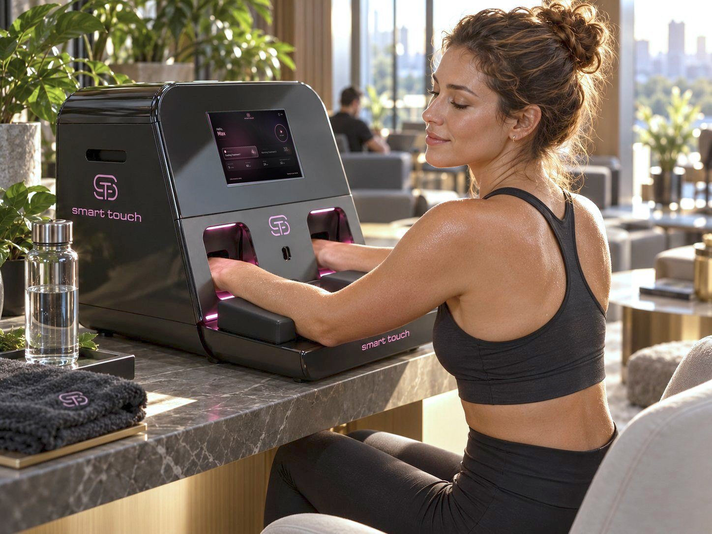
The power
of touch
Your hands are extraordinary.
They sense the world, they comfort, they speak without words, and they help your body exchange heat with its surroundings.
You know what a touch can do: a reassuring hand, cold water on warm skin. Sometimes a single touch is enough to change how the whole body feels.
Smart Touch invites you to use that power for something good for your body. The moment your hands slide into the chambers, a precisely controlled cold meets them, crisp and activating.
Your hands feel the cool. Your whole body feels the difference: the cool travels up the arms, across the shoulders and the neck, all the way to behind the eyes. And when you take your hands out, you feel refreshed and restored.
A natural
exchange
Your hands help the body regulate its temperature. Beneath the skin of the palms run special blood vessels, called AVAs, the body's own heat exchanger. When you are warm, they open wide to let the heat out; when you are cold, they can close almost completely. This is how the body cools itself after effort or on a hot day, quietly, without you noticing.
Smart Touch works with this built-in system. Gentle negative pressure helps keep the vessels open and invites more blood into the hands,(1) while the cool surface cools the blood flowing through them. As the blood circulates, it carries the cooling effect towards the body's core, without intense cold or cold shock. And it works both ways: the first experimental devices rewarmed patients after surgery in 8 or 9 minutes instead of hours.(2)(3)
(1) Grahn DA et al., Journal of Applied Physiology, 2005 · (2) Stanford Report, 2012 · (3) Grahn DA et al., Journal of Applied Physiology, 1998
A wild
idea
It started, memorably, with bears.
Stanford researchers Dennis Grahn and H. Craig Heller explored how animals and humans regulate body heat. Their curiosity led them to an unlikely source of inspiration: black bears. Built for winter in a thick coat of fur, bears face a very different problem when spring arrives: overheating. They cannot take off their coat, so how do they release the heat?
The answer shows on a thermal image: a bear almost disappears into the background, while the pads of its paws and the tip of its nose glow brightly. That is where its body lets the heat out.
Our hands do exactly the same: the AVAs in our palms let the body release heat. Grahn and Heller were looking for a way to study how heat leaves the body, and stumbled on something far bigger, almost by accident.
They combined palm cooling with gentle negative pressure to keep blood flowing through the hands. What began as a simple idea about temperature regulation led to remarkable results in physical performance. So remarkable that Grahn called hand cooling "equal to or substantially better than steroids, and it's not illegal."
Reported for pull-ups across 6 weeks in one research protocol using hand cooling between sets.(2)
Reported in a 10-week training investigation that incorporated palm cooling.(2)
Duration observed in an experimental protocol with one hand cooled, compared with control.(1)
(1) Grahn DA et al., Journal of Applied Physiology, 2005 · (2) Grahn DA et al., Journal of Strength and Conditioning Research, 2012
Trust
MCRC
Speak to a specialist ↗︎MCRC AG, Zürich: Swiss standards in selection, service and responsibility.
Every technology meets European and international safety standards and holds EU product safety certification.
Every technology we offer runs daily, in our own venues and with operators worldwide.
In good
hands
Smart Touch greets you by name and loads your programme.
UV light disinfects the chambers for you before the session begins.
Both hands slide into the chambers, and rounds of cool alternate with breathing pauses, while the screen tells you what is happening inside you.
The session ends on its own. Don't forget to take your card.
A typical session is designed around five 3-minute cooling rounds with short breathing pauses, approximately 20 minutes altogether. Temperature, rounds and pauses can be configured for each guest through their personal Key Card.
Right where
people are
The San Francisco 49ers, the Oakland Raiders and Stanford's own football team have all cooled their hands between efforts.
Your hands connect touch, temperature and the nervous system: thousands of nerve fibres feel every change. Smart Touch turns that connection into gentle training for your body's own thermal intelligence.
During a heat wave, Harvard students without air conditioning had 13% slower reaction times on cognitive tests.(1)
Surgeons after long operations, firefighters after a fire, drivers after a race in fireproof suits: research shows hand cooling brings the heat down wherever protective clothing traps it.
Better
together
20 minutes that fit before, between or after other treatments.
- Strength training
- Endurance & team sports
- Hot yoga & Pilates
- Sauna & infrared
- Breathwork & meditation
- Sleep & wellness
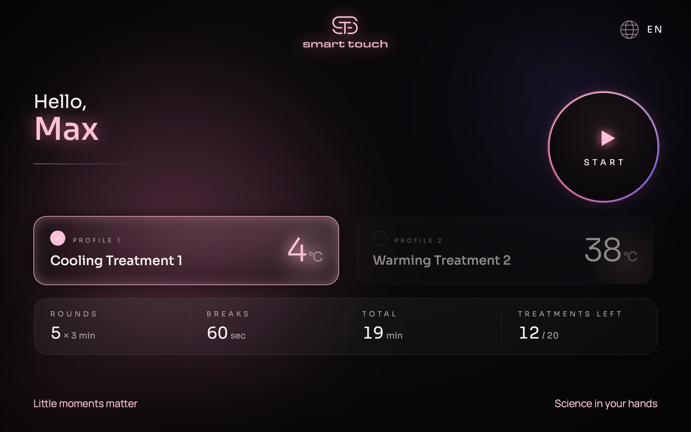
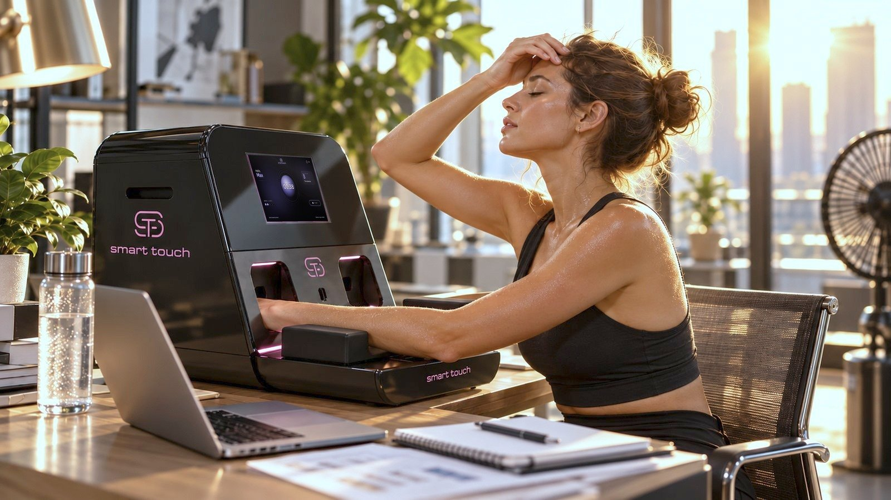
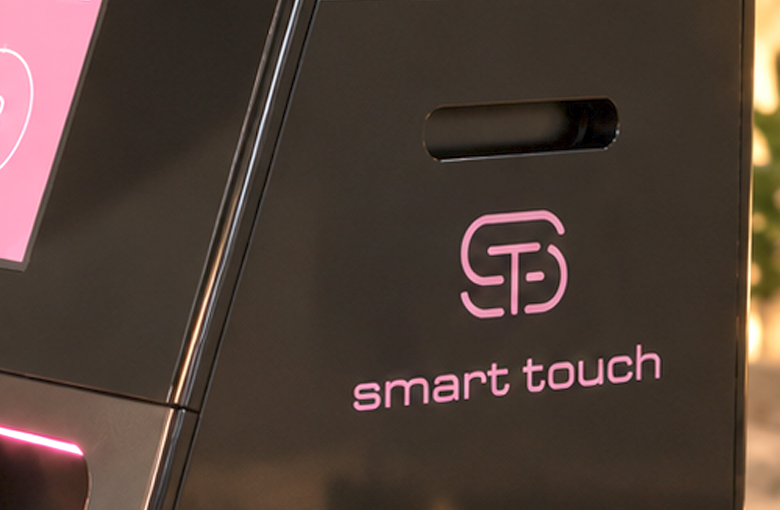
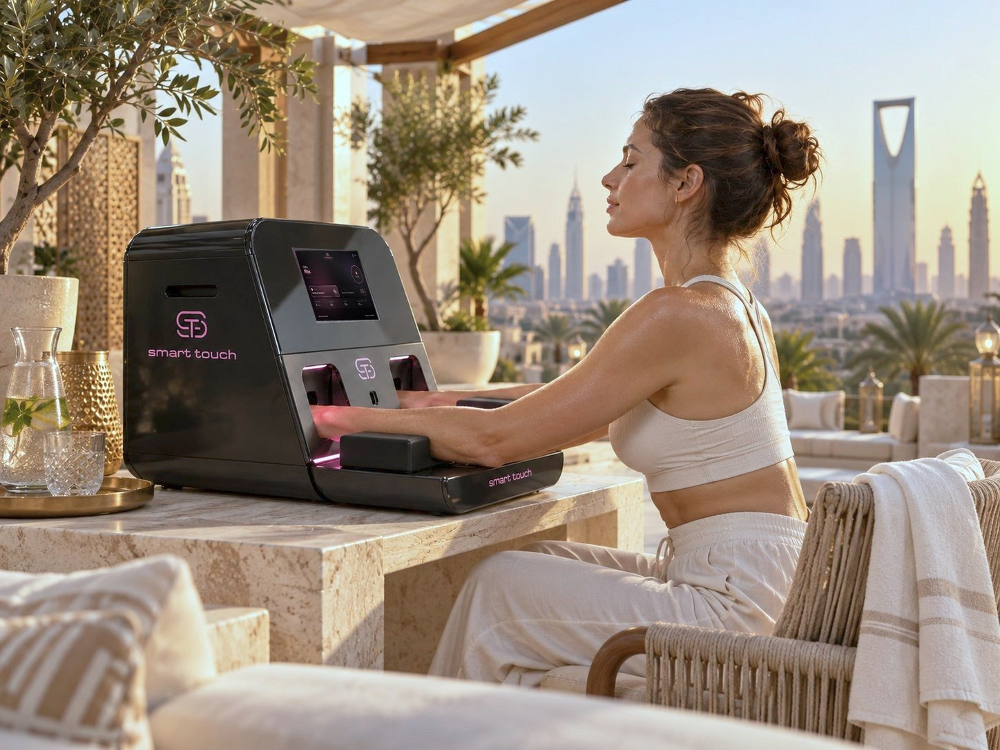
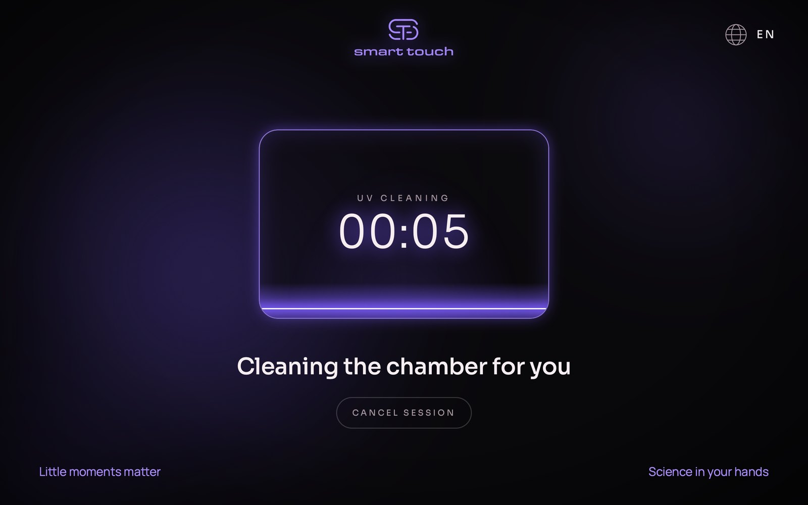
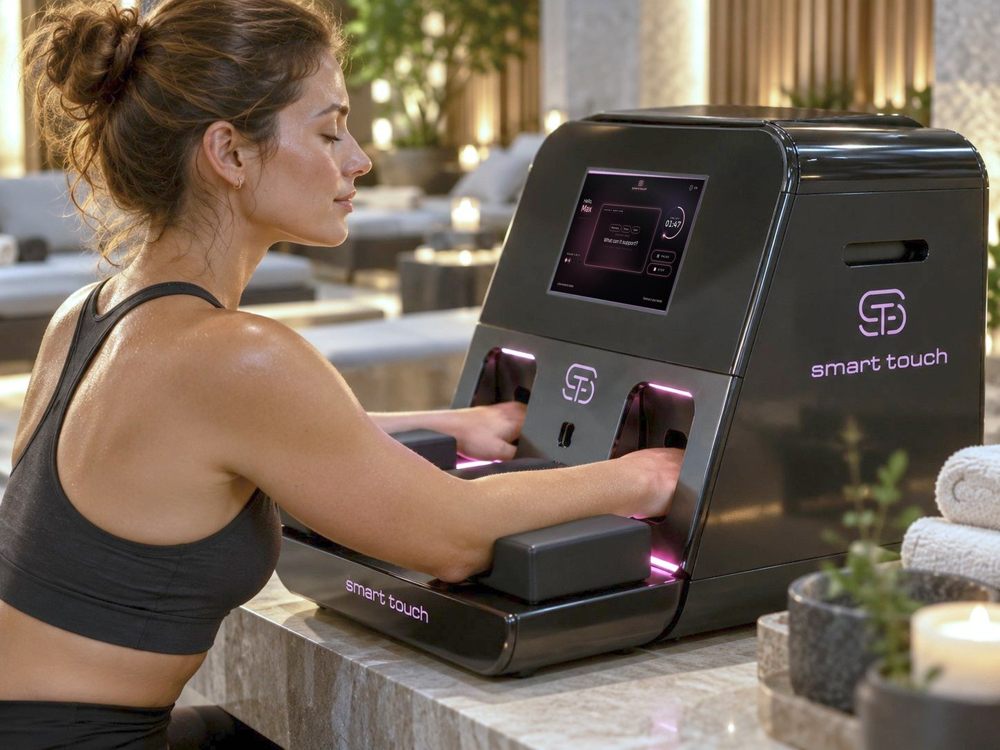
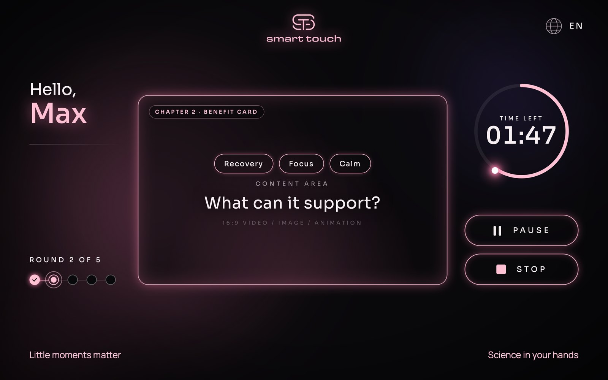
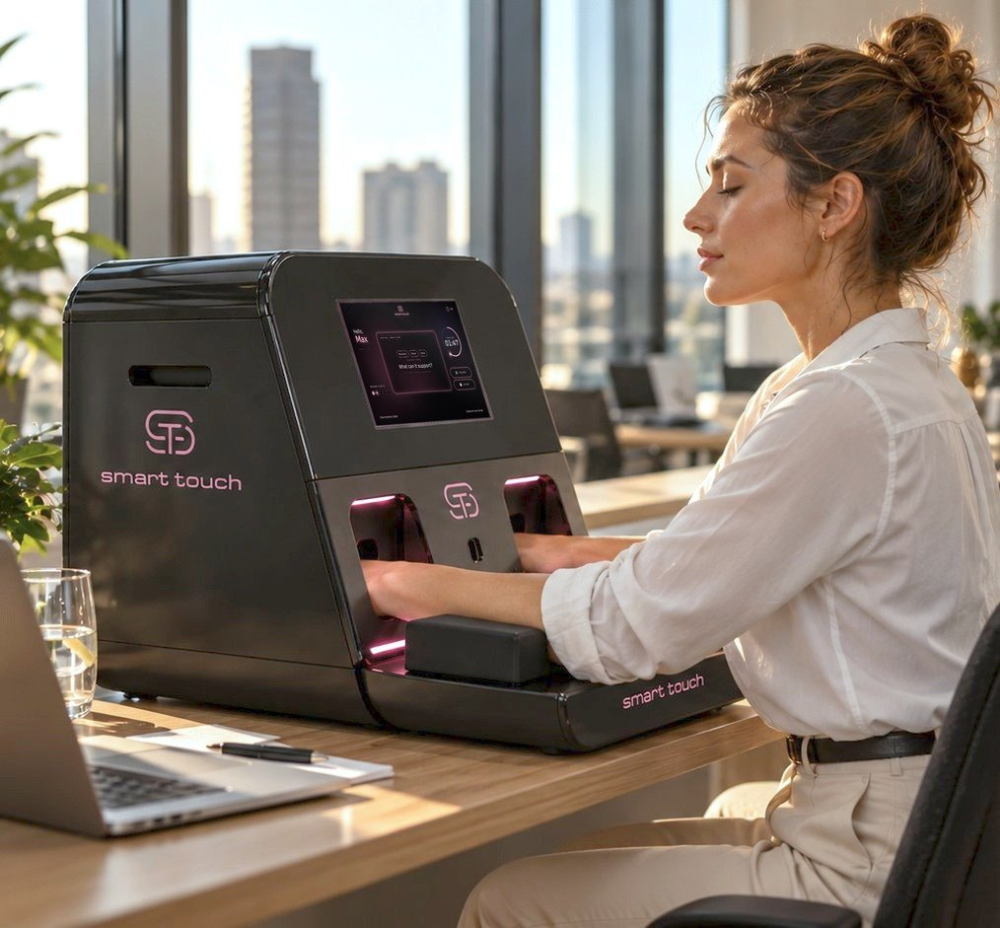
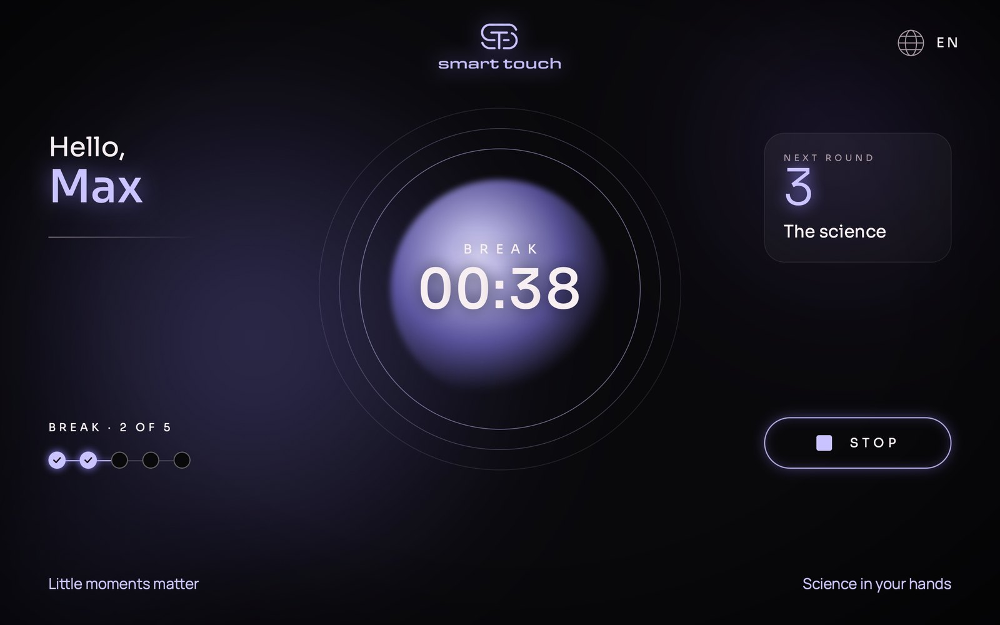
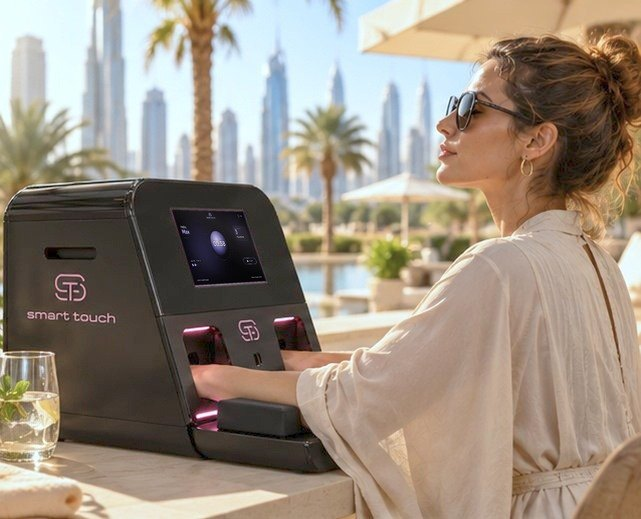
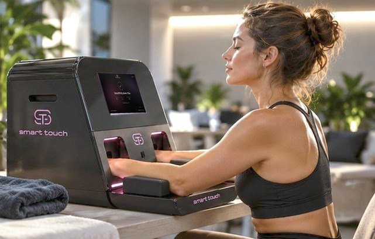
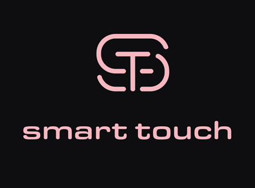
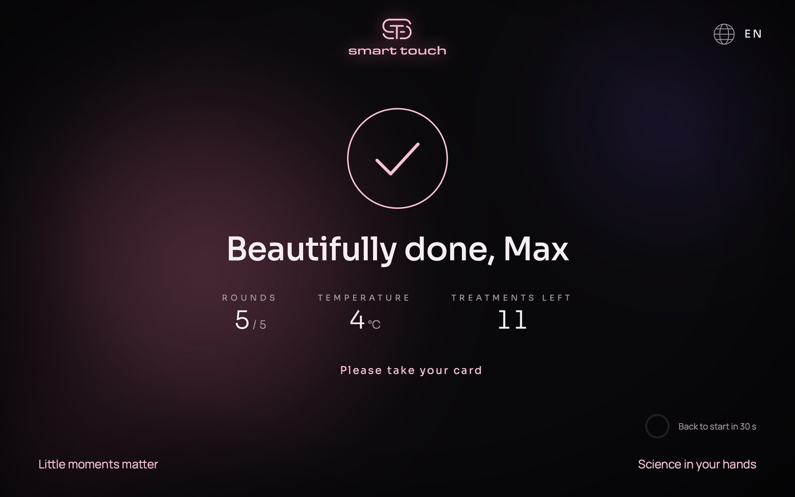
In
detail
- Format
- Table-top unit with magnetic arm rests
- Method
- Palm cooling with gentle negative pressure
- Temperature
- Contact surface from +1 °C to +42 °C
- Negative pressure
- Max. 40 mmHg
- Session
- Pre-programmed, with individual settings
- Position
- Seated, hands resting in the chambers
- Access
- Personal Key Card (RFID)
- Programme
- Rounds, pauses, temperature and number of treatments set by the operator
- Interface
- 10" touchscreen, guided steps, EN / DE
- Hygiene
- UV light disinfection before every session
- Dimensions
- 573 × 485 × 600 mm open, 375 mm high closed, 30 kg
- Power
- 100 to 240 V, 50 / 60 Hz; max. 1 kW in operation
- Installation
- Plugs into a standard socket
- Service
- Remote maintenance via Wi‑Fi or LAN
- Warranty
- 24 months device, 12 months arm rests
- Certification
- CE certified
- Design
- Made in Italy
Runs
by itself
Set each guest's programme once, on their Key Card, to let them use Smart Touch on their own. It greets them by name, cleans itself, runs every round and counts down the sessions left on their card. Your team stays free for what matters most: a warm welcome and a lovely conversation.
The screen is designed to turn every round into a short chapter: what is happening inside the body, what Smart Touch can support, an expert's view, short films that work without sound. Guests understand what they feel, and what people understand, they value, book again and tell their friends about.
- Fits on a table or console and plugs into a standard socket
- Self-service by Key Card, no staff per session
- Packages and memberships on the card, with the sessions left always in view
- New content and updates over Wi‑Fi, remote support included
- Studio mode for free trials, events and open days
Good to know
What is Smart Touch?
Smart Touch cools the body through the hands. The palms hold special blood vessels, called AVAs, made to release heat. When they are cooled, the blood carries the freshness through the whole body. Smart Touch pairs a precisely controlled cool surface with gentle negative pressure, which keeps those vessels open.
What are the benefits of Smart Touch?
Smart Touch helps the body do what it does naturally: release heat. Research links the method to more endurance in the heat, more repetitions and higher training volume in strength training, and a faster cool-down after effort. Smart Touch takes the strain out of the moments when heat slows body and mind down: hot days, the sauna, protective clothing, a stuffy room. Warmth works the other way. It opens the same vessels and brings warmth back into the body after the cold, a winter run or a long day outside, leaving the hands warm and the body calm. And then there is the session itself: 20 quiet minutes with guided breathing, after which many people describe feeling refreshed, clear-headed and restored.
How do athletes use Smart Touch?
In 4 ways. Between sets in strength training, a few minutes on Smart Touch after each set helps delay the fatigue that comes with heat, so the next set can be as strong as the last. On the sideline and at halftime: NFL teams such as the San Francisco 49ers and the Oakland Raiders have used palm cooling to bring the heat down between efforts. In endurance training in the heat, Smart Touch helps athletes keep going for longer. And after training, it brings body temperature down faster, so recovery can begin sooner. The hotter the conditions and the harder the effort, the more noticeable the difference.
What does a session feel like?
Cool and crisp in the first round, then the cool settles. Between rounds, the screen guides you through short breathing pauses and explains what is happening inside you.
How long does a session take, and how often should I use it?
About 20 minutes: 5 rounds of 3 minutes with 1-minute pauses, the standard protocol. The manufacturer recommends at least one session a week. Operators can adjust each guest's programme on the Key Card.
Is Smart Touch safe?
Smart Touch is CE certified and designed for controlled sessions: the contact surface stays between +1 and +42 °C, every session ends automatically, and UV light disinfects the chambers before each one. The user manual sets out all precautions.
Who should not use Smart Touch?
People with a pacemaker or implanted defibrillator, because the arm rests contain magnets, during pregnancy, or with a cold allergy.
Can Smart Touch also warm?
Smart Touch is built to warm up to +42 °C, and warming programmes are being developed. It's a return to the roots: the very first palm cooling devices rewarmed patients after surgery.
Can I offer Smart Touch in my gym, spa, clinic or office?
Yes. Guests use it on their own with a personal Key Card that holds their programme and remaining sessions, so it works as self-service, a package or a membership benefit. It sits on a table or console and plugs into a standard socket.
Why Smart Touch, and not a handheld palm cooler?
Because the results that made palm cooling famous were not achieved with a cold object in the hand. Stanford's researchers combined gentle negative pressure, which opens the blood vessels of the palm, with a cool surface of 18 to 22 °C: cold enough to draw the heat out, warm enough to keep those vessels open.(1) An ice-cold grip or a bucket of ice water does the opposite: the vessels close, and the heat stays in. Smart Touch is built on the original principle. A cold grip feels cool. Smart Touch cools you.
How is Smart Touch different from cryotherapy?
They work in opposite ways. Whole-body cryotherapy uses a short, intense cold as a thermal shock: the body reacts, and that response is what it trains. Smart Touch avoids the shock. It gently cools the blood through the palms and lets it carry the cool towards the core, while you stay dressed and in the middle of your day. Cryotherapy challenges the body; Smart Touch supports it.
Full operating and safety guidance is in the user manual.
Smart Touch is a CE-certified wellness device, not a medical device, and makes no medical claims.
Always
support you
Before and after the sale, our team answers whatever you and your guests need to know.
Your team learns to use it, explain it and recommend it.
Models, pricing and integration, personally.
Feel
the difference.
Models, pricing, and integration into your space: we'll take you through it personally.